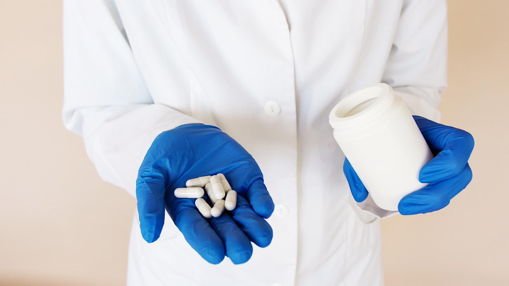

Phòng thử nghiệm ISO/IEC 17025
Phân tích định tính, định lượng, vi sinh — đáp ứng yêu cầu chất lượng và pháp lý ngành dược.
Apoliq kiểm nghiệm dược phẩm, thực phẩm chức năng (TPCN) và nguyên liệu dược tại phòng thử nghiệm ISO/IEC 17025.
Xác thực năng lực: Hồ sơ năng lực ISO/IEC 17025 · Hotline 0917 333 965
Phân tích định lượng hoạt chất, tạp chất, vi sinh theo Dược điển Việt Nam.
Báo cáo phục vụ hồ sơ đăng ký, thẩm định chất lượng với cơ quan quản lý.
Kiểm nghiệm độc lập từ phòng thử nghiệm được công nhận ISO/IEC 17025.
Cam kết lịch trả kết quả rõ ràng ngay khi nhận yêu cầu.
Kiểm nghiệm dược phẩm là quá trình phân tích và đánh giá chất lượng, tính an toàn và hiệu quả của các sản phẩm dược phẩm. Kiểm nghiệm dược phẩm đóng vai trò quan trọng trong việc đảm bảo các sản phẩm đáp ứng tiêu chuẩn chất lượng và tuân thủ các quy định của ngành dược.
Apoliq cung cấp dịch vụ kiểm nghiệm dược phẩm toàn diện với đội ngũ chuyên gia có trình độ cao và hệ thống phòng thí nghiệm hiện đại, đáp ứng các tiêu chuẩn GLP (Good Laboratory Practice) và các tiêu chuẩn quốc tế về kiểm nghiệm dược phẩm.
Gọi hotline hoặc gửi form — nhận báo giá và lịch hỗ trợ dự kiến.
Liên hệ: 0917 333 965
Gửi thông tin — phản hồi trong giờ hành chính
Xác định thành phần hoạt chất và các chất có trong mẫu dược phẩm.
Xác định hàm lượng hoạt chất và tạp chất trong các sản phẩm dược phẩm.
Đánh giá đặc tính hòa tan và sự phóng thích hoạt chất của các dạng bào chế.
Đánh giá sự ổn định của sản phẩm theo thời gian và trong các điều kiện khác nhau.
Phát hiện và định lượng vi sinh vật, đảm bảo sản phẩm không bị nhiễm khuẩn.
Đánh giá các đặc tính vật lý như độ cứng, độ mòn, và độ rã của viên thuốc.
Tiếp nhận và đăng ký thông tin mẫu dược phẩm cần phân tích.
Chuẩn bị mẫu theo phương pháp phù hợp với từng loại phân tích.
Thực hiện các thử nghiệm phân tích theo tiêu chuẩn quốc tế và dược điển.
Kiểm tra tính chính xác và độ tin cậy của kết quả phân tích.
Phát hành báo cáo kết quả chi tiết đáp ứng yêu cầu pháp lý và kỹ thuật.
Sử dụng thiết bị hiện đại và phương pháp phân tích được quốc tế công nhận.
Chuyên gia có bằng cấp chuyên ngành dược và kinh nghiệm trong lĩnh vực kiểm nghiệm.
Cam kết thời gian trả kết quả đúng hẹn và tối ưu các quy trình phân tích.
Cung cấp tư vấn về các vấn đề liên quan đến chất lượng sản phẩm và quy định pháp lý.
Hỗ trợ trong quá trình đăng ký thuốc và các sản phẩm liên quan đến dược phẩm.
Định tính, định lượng hoạt chất, tạp chất, độ hòa tan, vi sinh, độ ổn định — tùy loại bào chế và yêu cầu.
Phụ thuộc gói chỉ tiêu. Chúng tôi báo lịch cụ thể khi nhận mẫu và yêu cầu phân tích.
Báo cáo từ phòng thử nghiệm được công nhận, phục vụ kiểm soát chất lượng và hồ sơ kỹ thuật.
Gọi ngay hoặc nhắn Zalo — gửi tên sản phẩm, số mẫu và tiêu chuẩn áp dụng.